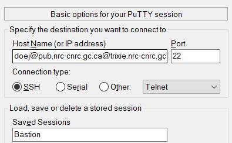
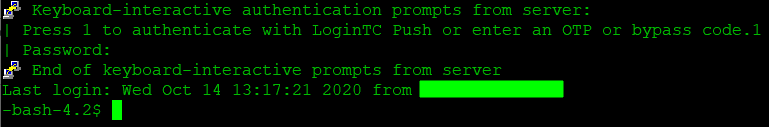
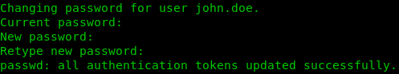

Internal Access Setup¶
Overview¶
As an internal NRC employee, you can access the AI for Design (Trixie) Cluster using your
SRN credentials. On your first login, you may be required to change your password.
Please note: during the password change, the first prompt asks for a confirmation of your
existing password prior to requesting a new one.
In order to access Trixie, you will need to use an SSH client. Please note that you cannot access Trixie using a web browser. On Mac OSX and Linux, SSH is installed by default. On Windows you will need to install Putty if it is not installed already. You can install Putty from the NRC software portal which should be an icon on your Windows desktop.
Trixie can only be accessed from one of two ways
- The Secure Research Network (SRN)
- The Legacy network using the bastion host
The following sections will detail the procedures for logging into Trixie from these networks.
Logging in From the SRN Network¶
In order to access Trixie from the SRN network, you can login to Trixie directly with an SSH client.
Initialize SSH Connection with Mac OSX / Linux¶
For Mac OSX and Linux you can open a new terminal and connect to trixie.res.nrc.gc.ca via ssh
using your SRN credentials and the following command, where <username> is your SRN user
ID consisting of your lastname followed by one or more initials of your first name - like doej
for John Doe.
ssh -l <username> trixie.res.nrc.gc.ca
Initialize SSH Connection with Windows¶
For Windows, you can create a Putty profile to SSH into Trixie. Note that <username> is your
SRN user ID consisting of your lastname followed by one or more initials of your first
name - like doej for John Doe.
Under Session
- Set Host Name (or IP address): <username>@trixie.res.nrc.gc.ca
- Set Port: 22
- Add a name for Saved Sessions – perhaps Trixie

- Click Save
Once the settings have been saved, you can double click on the name in the list of Saved Sessions to open a session to Trixie.
Logging into Trixie - a Tutorial¶
In the following procedure, the information printed in the images may not be the same as what you will see when you login. However the steps will be the same.
Please perform the following steps to access Trixie.
- From the terminal prompt, use SSH to log into
trixie.res.nrc.gc.cawith your SRN account and password with a similar command as the following.
ssh <username>@trixie.res.nrc.gc.ca - If a message similar to the one below appears, then simply type in yes to the prompt as
shown below

- Once you have successfully logged in, you will be logged into Trixie – your screen should look
similar to the following

NOTE 1: After successful authentication, you should see the Trixie cluster login banner with the terms of use and be placed in a shell in your home directory on the cluster, similar to the image above.
NOTE 2: You will be placed in your home directory which only you have access to. For more information on the cluster and its usage, please see the:
Logging in From the Legacy Network¶
In order to access Trixie from the Legacy network, you will need to use an SSH client to login to a bastion host with the LoginTC authentication application.
Accessing Trixie with LoginTC 2-Factor Authentication¶
LoginTC is an authentication application that you should have installed on your mobile phone. It implements a two-factor authentication system for secure access to Trixie.
LoginTC Application Setup¶
Before you attempt your first login, the following initial installation and configuration of LoginTC must be implemented.
- You should have received an email to setup and initialize the LoginTC application (for iOS, Android, or the Chrome web browser)
- Set up LoginTC using the directions provided to you by email
Initialize SSH Connection with Mac OSX / Linux¶
For Mac OSX and Linux you can open a new terminal and connect to trixie.nrc-cnrc.gc.ca via ssh
using your PUB account and the following command, where <username> is your SRN user ID
consisting of your lastname followed by one or more initials of your first name - like doej for
John Doe.
ssh -l <username>@pub.nrc-cnrc.gc.ca trixie.nrc-cnrc.gc.ca
TIP 1: Your PUB password is the same password you use to connect to the Legacy VPN.
TIP 2: Some users have reported that using doej did not work for their username. Please try
using the first.last format - for example john.doe - for your username if doej doesn't work
for you
Initialize SSH Connection with Windows¶
For Windows, you can create a Putty profile to SSH into the bastion server. Note that <username>
is your PUB user ID consisting of your lastname followed by one or more initials of your first
name - like doej for John Doe.
TIP 1: Your PUB password is the same password you use to connect to the Legacy VPN.
TIP 2: Some users have reported that using doej did not work for their username. Please try
using the first.last format - for example john.doe - for your username if doej doesn't work
for you
Under Session
- Set Host Name (or IP address): <username>@pub.nrc-cnrc.gc.ca@trixie.nrc-cnrc.gc.ca
- Set Port: 22
- Add a name for Saved Sessions – perhaps Bastion
 - Click Save
Once the settings have been saved, you can double click on the name in the list of Saved Sessions to open a session to the bastion server.
Logging into Trixie - a Tutorial¶
In the following procedure, the information printed in the images may not be the same as what you will see when you login. However the steps will be the same.
Please perform the following steps to access Trixie.
- When you login using one of the methods above, you will be prompted to authenticate with your
LoginTC application. The message should appear as follows:

- Press 1 followed by the Enter key and then check your LoginTC device as setup above to approve the login request
- If a message similar to the one below appears, then simply type in yes to the prompt as
shown below
- Once you have successfully logged in, you will be logged into the bastion server – your screen
should look similar to the following
 - You will need to login to Trixie next. From the bash prompt, use SSH to log into
trixie.res.nrc.gc.cawith your SRN account and password with a similar command as the following.
ssh <username>@trixie.res.nrc.gc.ca - If a message similar to the one below appears, then simply type in yes to the prompt as
shown below
- Once you have successfully logged in, you will be logged into Trixie – your screen should look
similar to the following
NOTE 1: After successful authentication, you should see the Trixie cluster login banner with the terms of use and be placed in a shell in your home directory on the cluster, similar to the image above.
NOTE 2: You will be placed in your home directory which only you have access to. For more information on the cluster and its usage, please see the:
Changing passwords¶
Passwords on the PUB and SRN accounts expire after a certain amount of time and must be changed. If you do not change your password, you could be locked out of the system.
Watch for the pop-up message notifying you to change your password, or set yourself a reminder to change your password every so often - perhaps every 90 days.
Being Forced to Change Your Password¶
If your password has expired, or you are using a password for the first time, then the system will likely force you to change your password. Please note that you will be prompted for your original (or current) password first and then you will be prompted to enter your new password twice.
The following is an example of the system forcing you to change your password
- During a login session you will be prompted to enter your password and then the system forces
you to change your password. You should see a message similar to the one below – remember to
enter your original password first and then enter your new password twice.

- The system will automatically log you out, thus, you will need to login again using your new password
Change Your PUB Password¶
You can change your PUB password by logging into the following website. The site allows you to manage your PUB account. Please use one of the following formats for your username
john.doe@pubdoej@pub
Please note that the Reset Password feature will not work if you do not fill in the security questions on the website. Therefore it is strongly recommended that you fill in the security questions so that you can reset your password if necessary.
Change Your SRN Password via Linux Terminal¶
- Ensure you are logged into the Trixie server (trixie.res.nrc.gc.ca)
- Type passwd then hit Enter
- You will be prompted for your original (or current) password first and then you will be prompted
to enter your new password twice. You should see a message similar to the one below – remember
to enter your original password first and then enter your new password twice.
 - The system will automatically log you out, thus, you will need to login again using your new password
Related Topics¶
Internal Access Advanced Configuration
External Access Setup
External Access Advanced Configuration
File Transfers